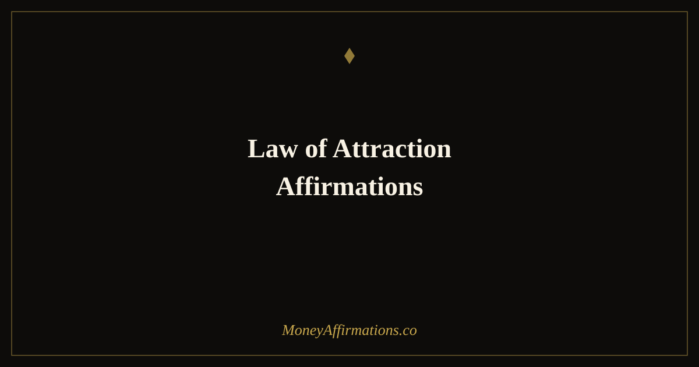

Law of Attraction Affirmations: 30 Statements to Manifest What You Want

The law of attraction is, at its core, a framework for understanding how your dominant beliefs shape your experience of the world. Whether you view it as metaphysical or psychological, one thing is consistently true: people who genuinely expect good outcomes behave differently than people who do not. They notice more opportunities, take more action, persist longer through setbacks, and interpret ambiguous situations more favourably. That difference in orientation produces measurably different results.
The affirmations in this collection are designed to address the full range of what people want to attract — not only financial abundance, but success in work, clarity of purpose, quality relationships, good health, and the freedom to live on your own terms. When your underlying beliefs align with what you want, the distance between intention and reality contracts. These 30 statements are starting points for building that alignment.
What are law of attraction affirmations?
Law of attraction affirmations are present-tense, first-person statements that claim alignment between your current belief system and the outcomes you desire. Rather than framing desires as future possibilities, they state them as present realities at the level of identity and orientation — because the LOA framework holds that attraction happens through who you are being now, not who you plan to become.
These affirmations cover the full LOA framework: the belief that your thoughts shape your reality, that focused attention draws more of what you attend to, that your emotional state signals to yourself and others what you are available for. They sit alongside our manifestation affirmations collection, which explores the broader landscape of conscious creation and intentional living.
30 law of attraction affirmations
- I attract into my life whatever I give my focused, positive attention to.
- My thoughts are powerful forces, and I choose them with care and intention.
- I am in alignment with the outcomes I desire, and they are drawn toward me.
- I receive what I genuinely believe is possible for me.
- My energy is clear, open, and magnetised toward abundance and success.
- I notice and act on opportunities that others overlook.
- Everything I need to create the life I want is already available to me.
- I attract the right people, resources, and circumstances at exactly the right time.
- My dominant thoughts are positive, expectant, and aligned with what I want.
- I am a powerful creator, and I take full responsibility for what I create.
- The universe conspires in my favour when I believe that it will.
- I let go of resistance and allow good things to flow into my life with ease.
- My beliefs are bigger than my fears, and my vision is stronger than my doubts.
- I attract financial freedom, fulfilling work, and meaningful relationships with equal ease.
- I am a clear channel for abundance in all its forms.
- What I appreciate appreciates — I focus on the good and watch it expand.
- I am open to receiving in ways I have not yet imagined.
- My outer world is a reflection of my inner world, and both are improving daily.
- I attract success because I prepare for it, expect it, and recognise it when it arrives.
- I release the need to control exactly how my desires unfold — I trust the process.
- I am worthy of the life I am calling in, and I accept it without guilt.
- Positive outcomes seek me out as readily as I seek them.
- I hold my goals lightly in my hands and firmly in my heart.
- Every day I move closer to the life I have envisioned for myself.
- I attract health, vitality, and the physical energy to pursue my goals fully.
- My confidence grows each time I act in the direction of my desires.
- I am in a constant state of receiving — good things arrive for me regularly.
- My attention is my most powerful tool, and I direct it deliberately.
- I attract clarity, purpose, and the conviction to act on what matters most to me.
- I am the sum of my deepest beliefs, and I choose beliefs that serve my highest good.
How to use these affirmations
The most important principle when working with law of attraction affirmations is emotional resonance. A statement spoken flatly, as if reading from a list, does relatively little. The same statement spoken with genuine feeling — with the sense that it is already true — begins to shift the neural pathways associated with that belief. When you read these affirmations, slow down at each one and ask yourself: what would it feel like if this were deeply true for me right now?
A practical daily structure might look like this: choose five affirmations each morning that feel both aspirational and just within the reach of belief. Read them slowly, twice each. Then spend two minutes in a brief visualisation — not a elaborate mental movie, but a simple, felt sense of having what you are affirming. This combination of affirmation and emotional imagining is more powerful than either alone.
Evening is also a productive time for this work. The mind is more receptive as it moves toward sleep. Reading three to five affirmations before bed, and holding them lightly as you drift off, gives the subconscious extended time to process and reinforce the beliefs they contain. Over weeks, this evening practice can produce noticeably different thinking patterns — greater expectancy, less defaulting to worst-case scenarios.
The psychology behind the law of attraction
Setting aside the metaphysical claims, the practical effects of LOA-aligned thinking are robustly supported by several well-established psychological mechanisms. Understanding these mechanisms helps you use affirmations more deliberately.
The reticular activating system (RAS) is a neural network that filters the enormous volume of sensory information your brain receives, prioritising what you have signalled — through attention and belief — as important. When you consistently affirm that opportunities are available to you, you prime the RAS to notice them. This is why people who begin practising abundance-oriented thinking report seeing more opportunities — they are not imagining them, they are noticing what was already there but previously filtered out.
Confirmation bias operates similarly. The mind naturally seeks evidence that confirms its existing beliefs. Negative beliefs generate a search for confirming negative evidence; positive beliefs generate a search for confirming positive evidence. Affirmations, practised consistently enough to shift the underlying belief, change the direction of this search.
Implementation intention research by psychologist Peter Gollwitzer shows that explicitly stating how and when you will do something dramatically increases follow-through. Affirmations that contain an implied identity — "I am a person who acts on opportunities" — function similarly to implementation intentions, nudging the mind toward action rather than passive hoping.
Finally, self-efficacy theory, developed by Albert Bandura, demonstrates that belief in your capacity to produce a desired outcome is one of the strongest predictors of whether you will pursue it. Affirmations that build felt confidence directly increase self-efficacy, which increases the likelihood of taking the actions that produce results.
Tips to make these affirmations work faster
- Feel them, do not just say them. Spend three to five seconds after each affirmation generating the emotional state it describes. The feeling is the signal that belief is shifting — words alone are less effective without it.
- Stack them with action. The most powerful LOA practice pairs an affirmation with a concrete small step toward the desired outcome. Saying "I attract success" then doing one thing in service of that success reinforces the belief faster than affirmation alone.
- Track confirming evidence. Keep a brief daily log of moments that align with your affirmations — a kind word from a colleague, an unexpected opportunity, a moment of financial ease. This trains the RAS to look for more of the same.
- Revisit during emotional dips. When you feel discouraged or cynical, that is exactly when to return to one simple, core affirmation. The practice of choosing a positive belief during low moments builds genuine resilience.
- Be patient with the gap. There is always a gap between shifting internal belief and seeing external results. Trust that the shift is happening even before evidence appears, and resist the urge to decide too early that the practice is not working.
Frequently Asked Questions
Is the law of attraction real or pseudoscience?
The law of attraction as a metaphysical principle — that like energy attracts like energy — is not scientifically proven. However, the psychological mechanisms it describes are well-supported. Confirmation bias, the reticular activating system, implementation intention research, and self-efficacy theory all show that belief in an outcome genuinely changes what you notice, how you behave, and how persistently you pursue goals. The practical effects of LOA-style thinking are real even if the metaphysical mechanism is unverified.
How do law of attraction affirmations differ from wishes or hopes?
Wishes and hopes place the desired outcome in the future and outside your control. Law of attraction affirmations state the outcome as already real at the level of belief and identity — "I attract abundance" rather than "I hope abundance comes to me." This present-tense, first-person framing engages the subconscious differently, prompting it to filter for confirming evidence and align behaviour with the stated belief. The affirmation is a claim about your current orientation, not a request made to an external force.
How long does it take for law of attraction affirmations to work?
There is no fixed timeline, and anyone who offers one is guessing. The honest answer is that noticeable shifts in perspective — feeling more alert to opportunity, less consumed by scarcity thinking — can happen within days of consistent practice. Tangible external changes take longer because they depend on the actions those mental shifts prompt, and on circumstances that may require weeks or months to align. Consistency matters more than intensity: a short daily practice sustained for three months will outperform an intense week followed by nothing.
To extend this practice into the specific domain of manifesting financial outcomes, explore the full manifestation affirmations collection — 60 statements focused on conscious creation, belief in possibility, and the conditions that allow intended outcomes to become real.